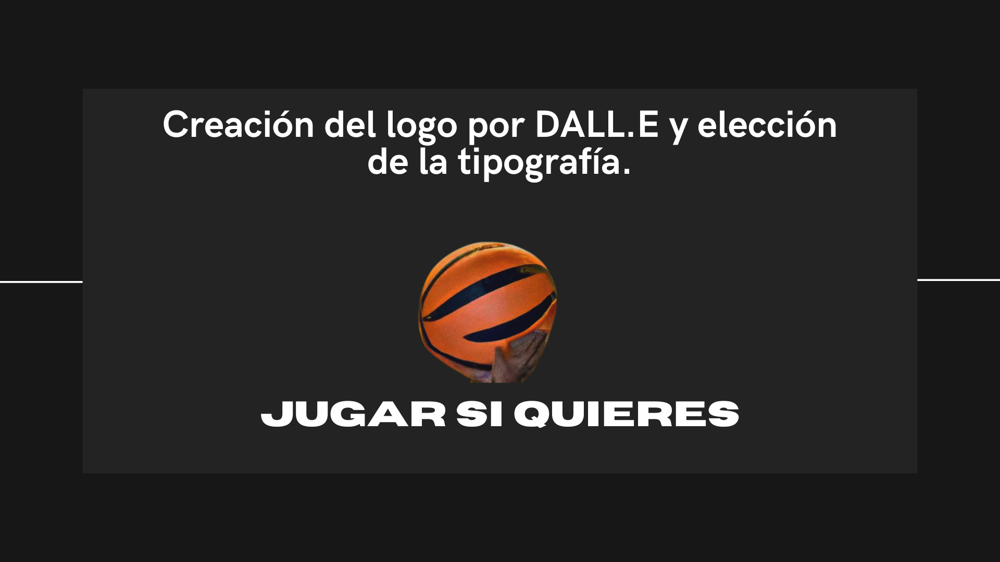
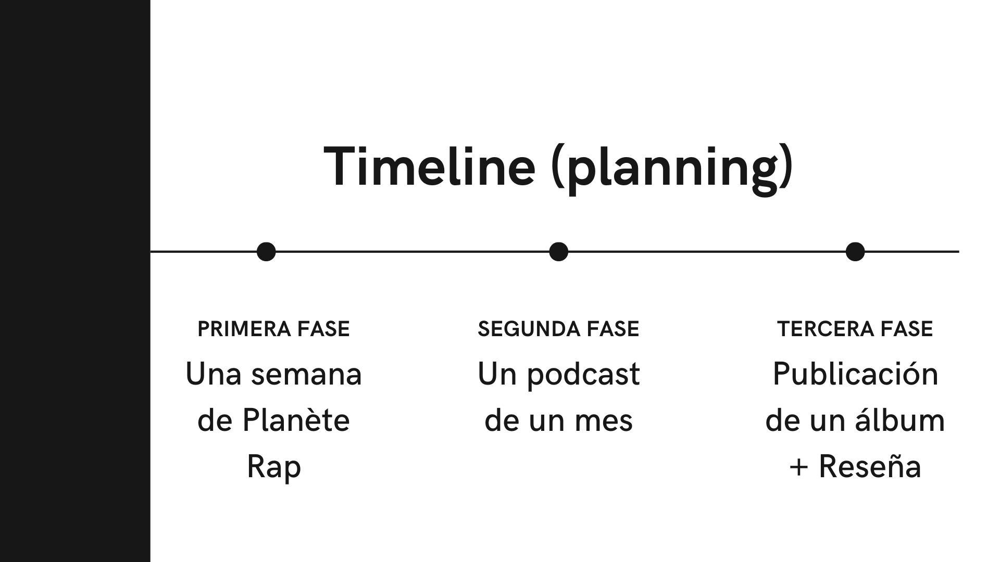
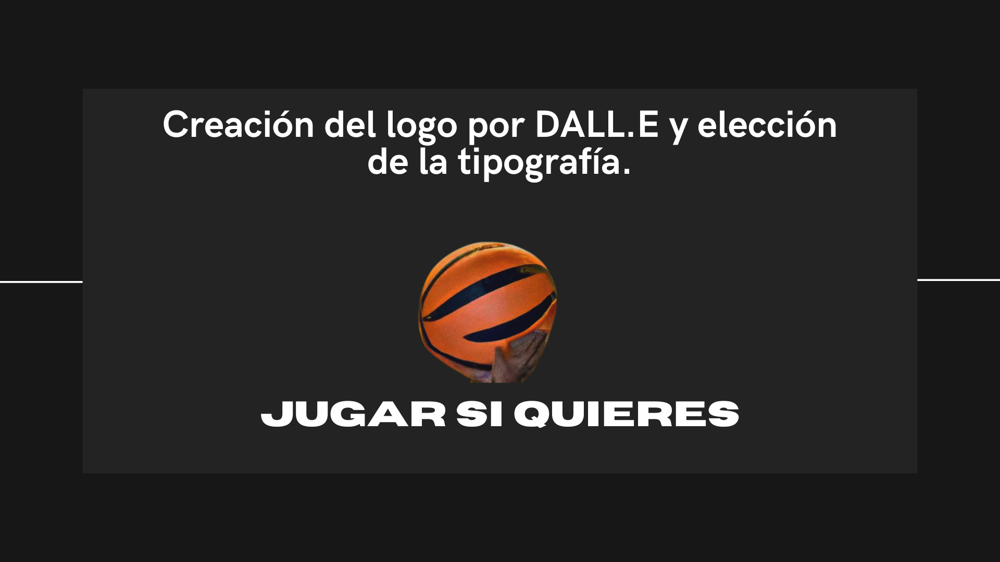
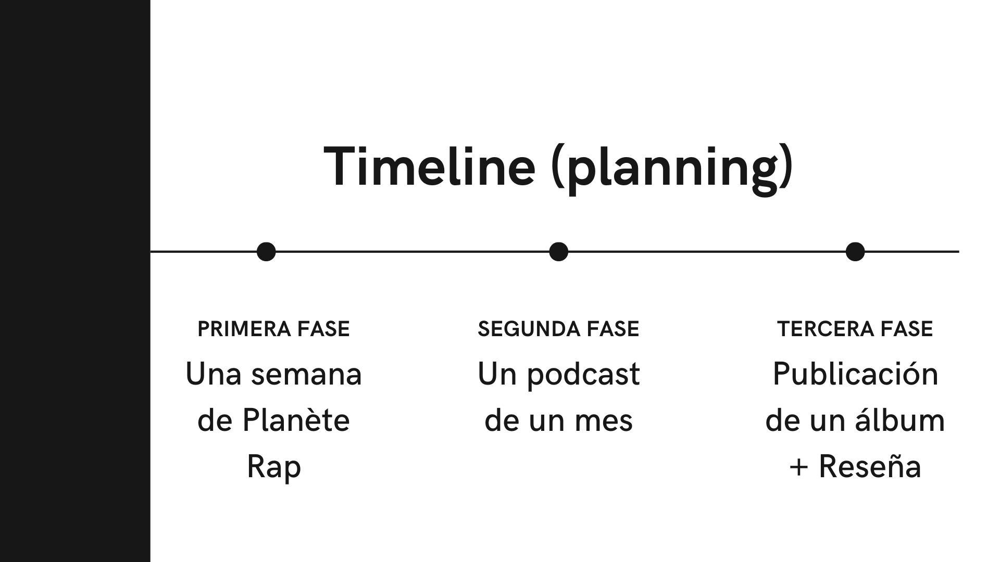
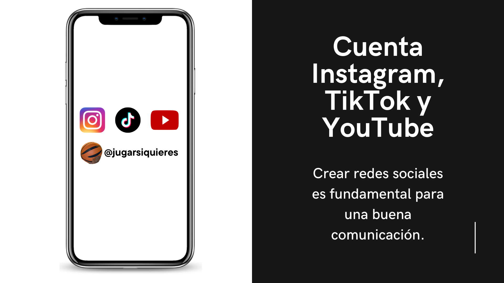
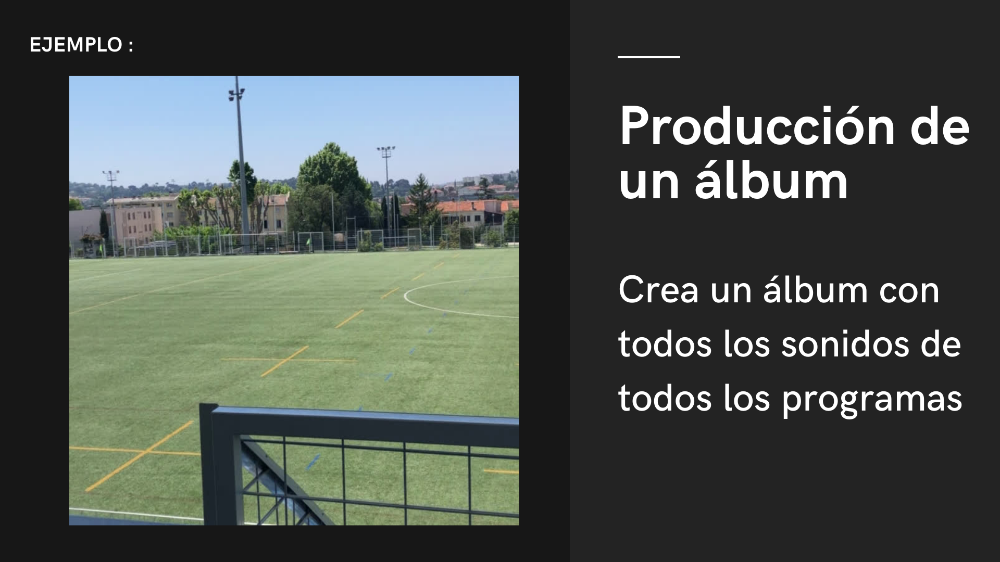
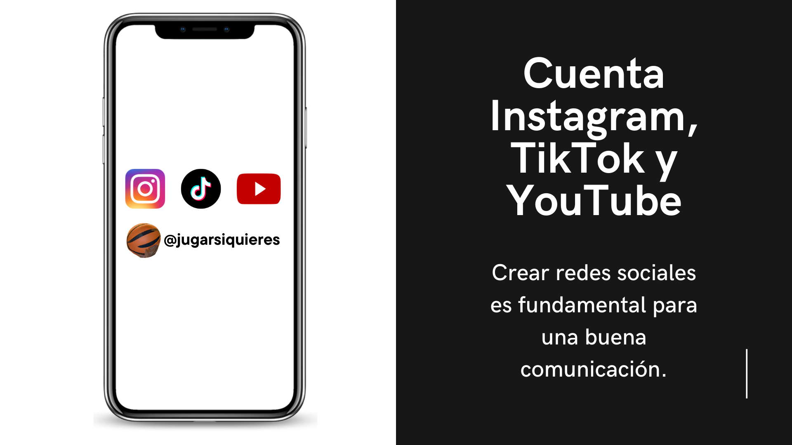
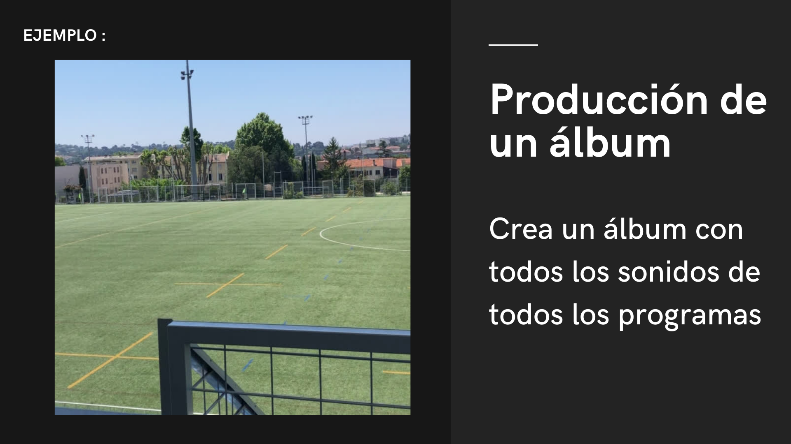

#JugarSiQuieres
Through the creation of the social media campaign #JugarSiQuieres, it was important to show the desire to defend minorities often discriminated against in sports. To do this, I used my musical talents to create a week-long show that would discuss this topic, as well as a music album.
Skills Developed :
- Communication and Awareness Skills : Creation of a social media campaign demonstrating the ability to design an engaging and inclusive message, use digital platforms to promote social causes, and raise awareness about discrimination in sports.
- Artistic and Musical Skills : Design of original media content, storytelling and narrative capacity, and media production skills.
- Social and Ethical Skills : Commitment to defending minorities: critical thinking about discrimination issues, empathy and solidarity, and ability to give a voice to marginalized communities.
- Transversal Skills : Creativity in communication, interdisciplinarity (music, social media, activism), and ability to mobilize different platforms for a unique message.
This project perfectly illustrates the ability to transform a personal commitment into a powerful artistic and social project, demonstrating that creativity can be a formidable lever for change and awareness.
View or download the full PDF by clicking on it.


 



 


